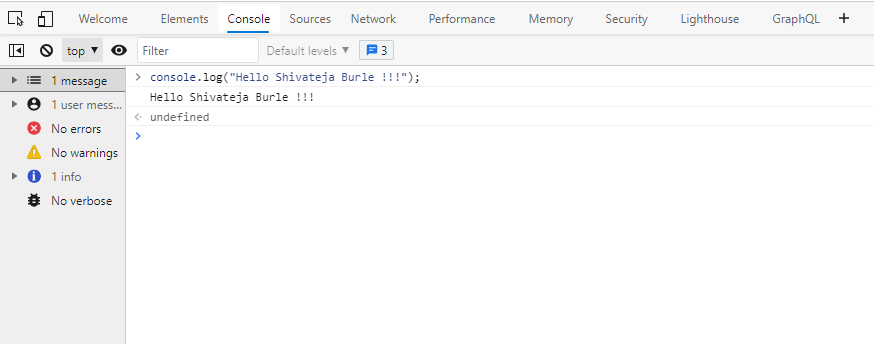

All modern web browsers as well as almost every other JavaScript environments support writing messages to a console using a suite of logging methods. The most common of these methods is console.log().
Getting Started
In a browser environment, the console.log() function is predominantly used for debugging purposes.
Open up the JavaScript Console in your browser, type the following, and press Enter:
This will log the following to the console:

In the example above, the console.log() function prints Hello Shivateja Burle !!! to the console and returns undefined (shown above in the console output window). This is because console.log() has no explicit return value.